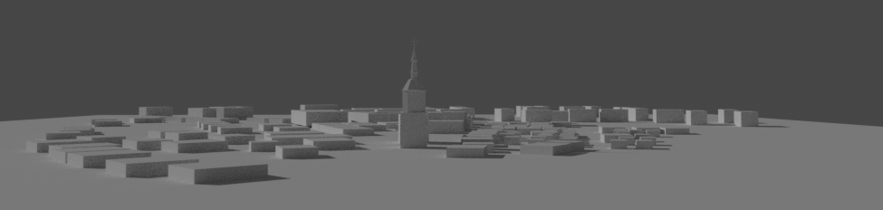

A Digital Journey Through Time
Experience the historic town of Kowel as it existed before World War II through our comprehensive digital reconstruction project.
Interactive Mapping
Explore over 130 pre-war buildings and historical street names through our Google Earth integration.
Historical Data
Access comprehensive business directories, voting districts, and population data from 1929-1938.
Community Project
Join our open-source initiative to preserve and reconstruct historical Kowel.
Project Highlights
130+
Reconstructed Buildings
360+
Business Listings
1929
Historical Data From
237
Project Commits
Available Resources
Historical Data
- 1929 Business Directory
- 1938 Phone Book Records
- Street Names Database
- Voting District Information
Digital Tools
- Google Earth Integration
- Historical Maps
- Building Coordinates
- 3D Reconstruction Tools
Join the Project
Help us preserve the history of Kowel for future generations
View on GitHub